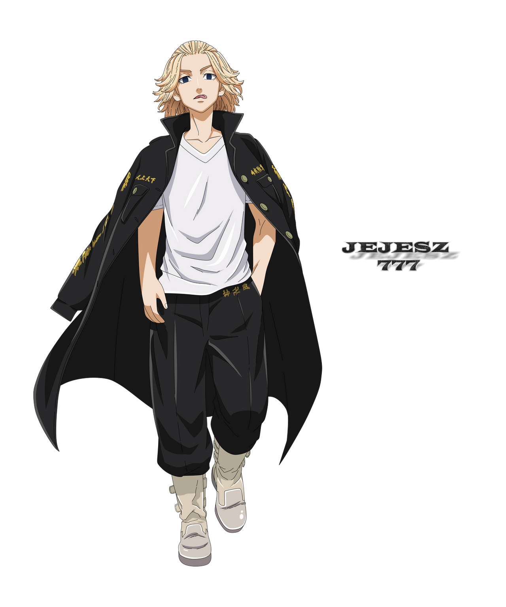
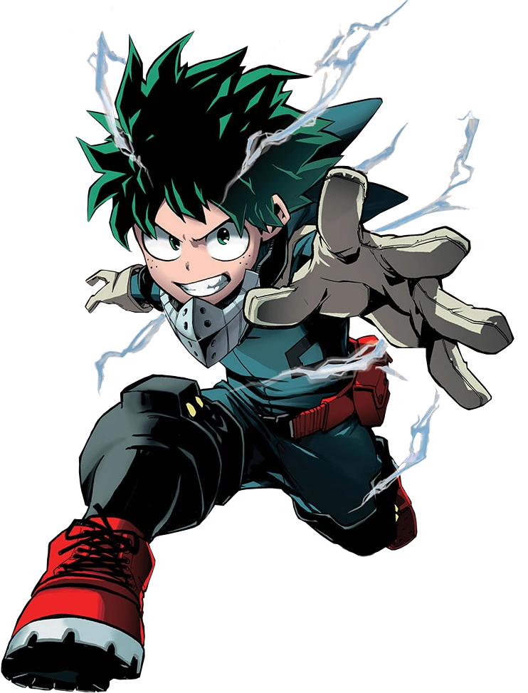

Jujutsu Kaisen
Jujutsu Kaisen is a Japanese manga series written and illustrated by Gege Akutami, serialized in Shueisha's Weekly Shōnen Jump since March 2018.

Tokyo Revengers
Tokyo Revengers is a Japanese manga series written and illustrated by Ken Wakui. It has been serialized in Kodansha's Weekly Shōnen Magazine since March 2017.

My Hero Academia
My Hero Academia is a Japanese superhero manga series written and illustrated by Kōhei Horikoshi. The story follows Izuku Midoriya.